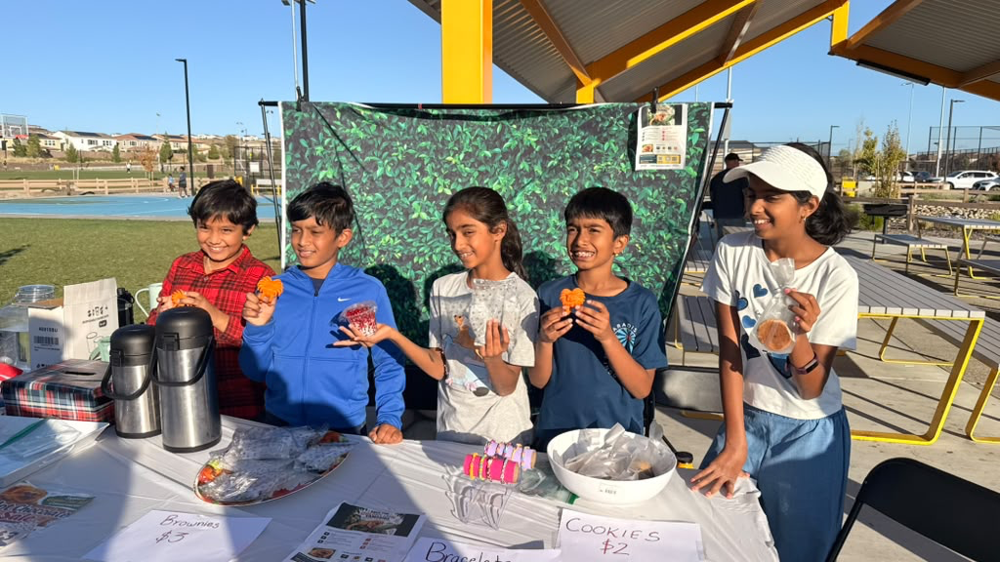
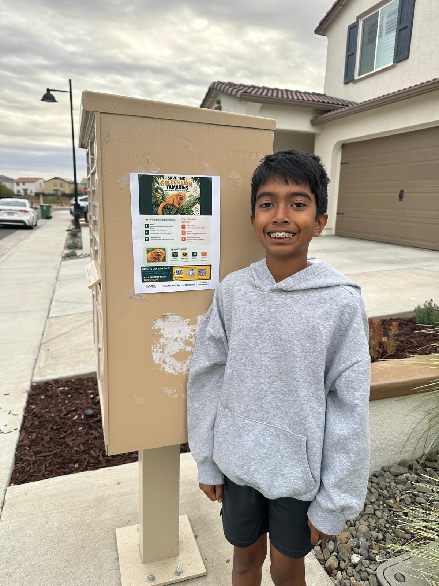
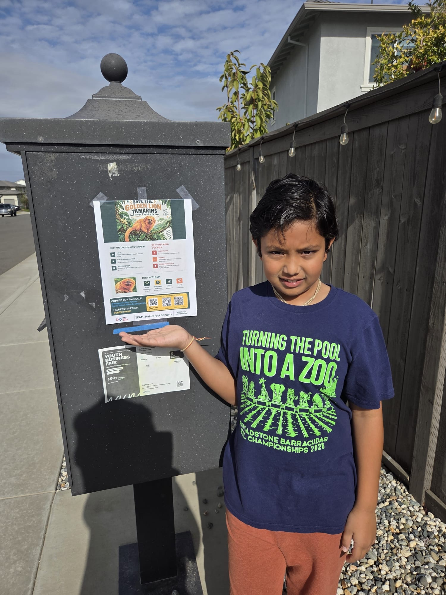
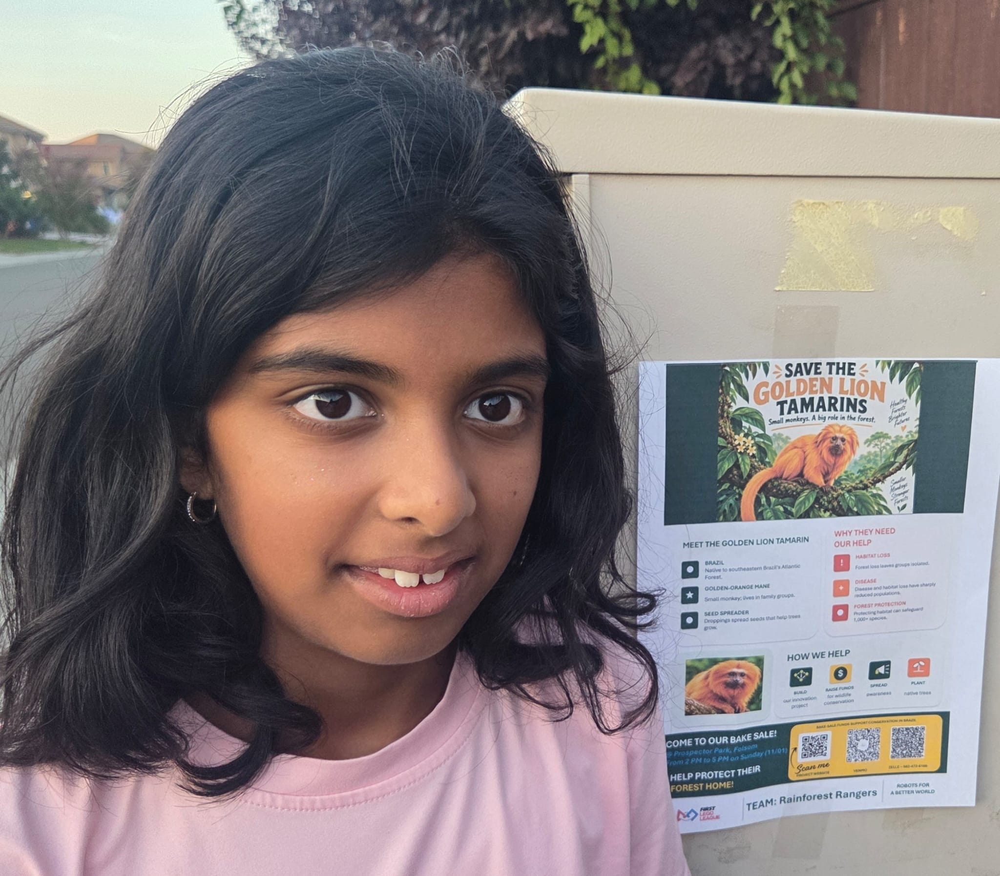
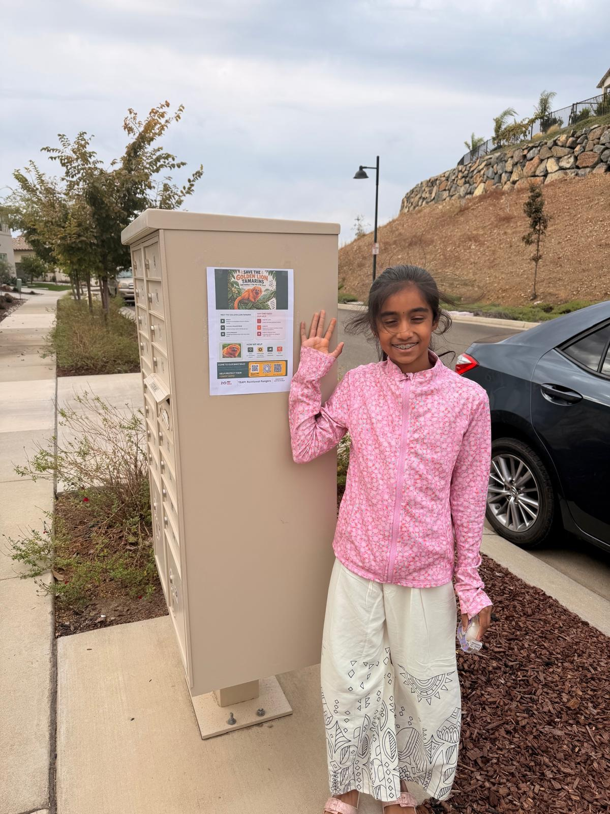
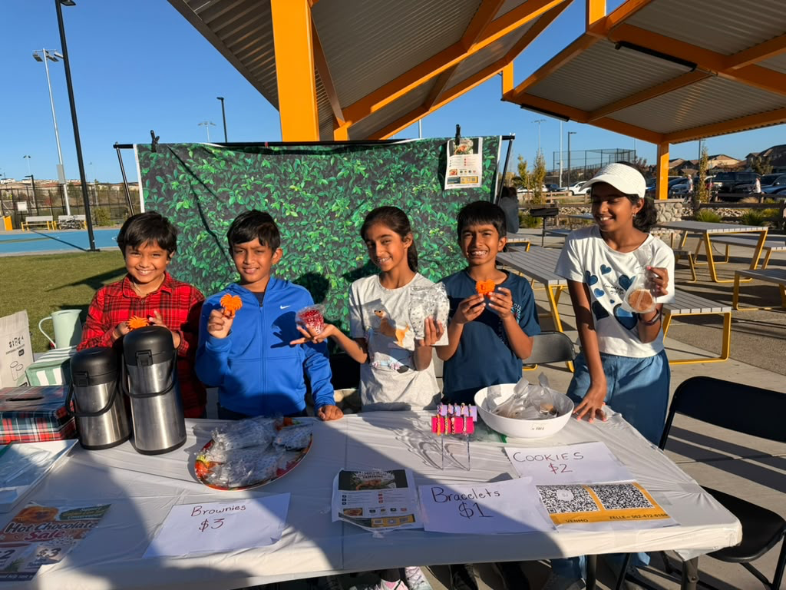

Recycled parts, living cover
Explore turning bottle PET into filament for modular bridge parts. Consider vines for cover and intermediate rest landings for longer spans, then support tree corridors and connected forest around them.
Our project
We are Rainforest Rangers, a fourth-grade FIRST LEGO League team at Theodore Judah Elementary. Tamarin Trails is our conservation project: learning, designing, and bringing people together for golden lion tamarins.
Meet our team

Community outreach
Our team with the posters sharing our golden lion tamarin conservation mission.




Our first fundraiser • Complete
2–5 p.m. • Prospector Park, Folsom

$200 raised together
We did it! Our community helped us raise $200 by buying cookies, brownies, hot chocolate, fruit cups, bracelets, and stickers.
Thank you to everyone who stopped by, bought something, or cheered us on. This is our first fundraising milestone for golden lion tamarin conservation.
Next, we plan to send the money to Save the Golden Lion Tamarin. We’ll share the donation update once the transfer is complete.
Follow our $200 →Our mission
We want more people to understand that conservation is not only about one animal. It is about forest connections, local communities, patient science, and plans that can last.
Through models, recycling experiments, and school events, we want to turn what we learn into useful support for forest conservation.
Our project journey • August–November 2026
What we have done, what we are designing, and what comes next. November 7 and 15 are planned milestones, not completed activities.
We explored team names and chose Rainforest Rangers. Our conservation project later became Tamarin Trails.
We researched rainforest habitat destruction and golden lion tamarins. We learned why isolated forest patches can leave families without safe connections to other habitat.
Explore what we learned →We explored a sequence: canopy bridges, tree corridors, then connected forest. Our idea uses modular 3D-printed parts made from recycled plastic bottles, with vines woven through and intermediate rest landings for longer connections.
This is a design proposal. We still need to test materials, structure, and whether the idea suits tamarins.
See the tabletop CAD concept →We identified Save the Golden Lion Tamarin, a U.S. nonprofit supporting Brazil-led conservation. We set up our tracker and decided to build a consistent record of fundraising and learning before asking experts to review our ideas.
Identifying a recipient is our first step; a collaboration has not yet been agreed.
Open our fundraising tracker →Our bake sale at Prospector Park, Folsom, ran from 2 to 5 p.m. We raised $200 selling cookies, brownies, hot chocolate, fruit cups, bracelets, and stickers.
Photos and thank-yous →Introduce our team and ongoing fundraising plan, arrange the $200 donation through the nonprofit’s official route, and ask for receipt confirmation after transfer. Ask what help is most useful and invite feedback on our restoration concept.
Evidence to collect: donation receipt, acknowledgment, and any expert response. Outreach and transfer are still pending.
Read our campaign plan and draft email →Present our research, restoration ideas, CAD model, fundraiser, and latest outreach status to the FLL innovation judges. Ask for feedback on the next test and how to make our project more useful.
Next record: judges’ feedback, one priority improvement, and who will take the next step.
Restoration concept • Tabletop model
Start with a model we can examine and improve. Ask experts what would be appropriate in real habitat.

Explore turning bottle PET into filament for modular bridge parts. Consider vines for cover and intermediate rest landings for longer spans, then support tree corridors and connected forest around them.
The preview depicts 17 open hexagons, 32 locking links, three supports, and a central rest landing. It is a tabletop representation, not evidence of an installed bridge or a recycled-PET print.
Check print fit, load, sag, weathering, entanglement risk, and maintenance with adult mentors. Ask conservationists whether tamarins would use the design and whether vines or rest landings would help.
Planned launch: November 7, 2026
Our proposed campaign: turn a first bake sale into a habit of helping, learning, and reporting back.
We’re Rainforest Rangers, fourth graders from Folsom. Our first bake sale raised $200 for our golden lion tamarin conservation mission. We plan to support Save the Golden Lion Tamarin and keep sharing what we learn.
Play our forest game, tell a friend why connected habitat matters, or join a future adult-organized fundraiser. Every month, we aim to share one small action and an honest progress update.
Subject: Folsom fourth graders raised $200 for golden lion tamarin conservation
Hello Save the Golden Lion Tamarin team,
We are Rainforest Rangers, a fourth-grade FIRST LEGO League team at Theodore Judah Elementary in Folsom, California. Our project is called Tamarin Trails.
On November 1, we raised $200 at a community bake sale. We would like to donate these funds and continue supporting conservation through small, regular fundraising and education activities. Could you confirm the best official donation route and how our adult organizer should request acknowledgment after the transfer?
We are studying canopy bridges, native-tree corridors, and connected forest. Our tabletop CAD concept explores modular parts made from recycled bottle PET, vines for cover, and intermediate rest landings. It has not been field-tested. Would someone be willing to tell us whether any part of this idea is worth exploring, and what safety or habitat questions we should investigate first?
What specific help from a student team would be useful now? We would be grateful for a short reply or a brief Q&A, if your team has time.
Thank you for your work,
Rainforest Rangers / Tamarin Trails
Sent by our adult organizer
Download the campaign, email, receipt follow-up, and judges’ outline
Drafts only. No message, donation, campaign spending, or nonprofit agreement has been made through this website.
Hope ahead • Planning tracker
Follow our ideas as they move from planning to action.
Proposed
Students prepare questions about local nurseries, forest corridors, and current needs. An adult sends them to a conservation organization.
Done when: we record a reply or an interview and identify one useful next action.
Proposed
Organize bottle collection and material records, then work with an adult fabrication mentor to test recycled PET filament for classroom conservation models.
Done when: we record material yield, print quality, cost, and one prototype’s test results.
Proposed
Test our habitat models and teach another class how trees, crossings, and land agreements work together.
Done when: we share a design log, one improvement, and an anonymous learning summary.
Complete • November 1, 2026
Our Prospector Park bake sale raised $200 through treats, bracelets, and stickers.
Next: send the funds to Save the Golden Lion Tamarin and record the transfer in our impact ledger.
Proposed
Ask a Brazilian conservation organization about supporting locally native nurseries, corridor planting, and continued tree care.
Done when: the recipient confirms a project and later reports planting survival or forest-cover progress.
Proposed
Help the next student team reuse the lesson, review sources, and continue following the forest’s progress.
Done when: we hand over a classroom guide, update checklist, and questions for the next team.
Follow fundraising and field updates in our impact tracker.
Our next engineering idea • Proposed
Could collected bottles become filament for useful conservation prototypes? We want to test the process in small jobs, measure the results, and improve it together.
Water-bottle PET stays PET when recycled into filament. PLA is a different plastic. We would confirm each material before processing it. Material sources →
Plan an approved collection, sort clean bottles by material with an adult, and record counts and mass. Keep caps and labels in their appropriate recycling streams.
A trained adult handles cutting strips, any controlled warming, drying, heated filament forming, and spooling with suitable equipment and ventilation. Students document yield and consistency.
Start with classroom bridge models, exhibit connectors, or test nursery-label designs. Ask conservationists what they need before developing field parts.
Use an available printer for small batches and quick design changes. Compare actual material, energy, equipment, and failed-print costs before claiming savings.
If demand and funding grow, compare injection molding, reusable molds, and other processes with a fabrication partner. Measure tooling costs, durability, repeatability, and waste.
Pair the engineering work with support for native-tree nurseries and corridor care in Brazil. Track verified seedling survival, canopy development, and wildlife use over time.
We will test prototypes with mentors and conservationists before considering outdoor or wildlife use.
Idea board
Ways to learn, create, and bring our community together.
Visitors arrange model forest patches, roads, and crossings—then explain which animals each design may help.
EngineeringDisplay student-made forest art beside one carefully sourced fact and one unanswered question.
StorytellingLet families play the conservation game, compare strategies, and learn why planted corridors need years of care.
CommunityCreate a local native-plant or pollinator project with guidance from a Folsom habitat expert.
Local actionPrepare student questions about corridors, community nurseries, monitoring, and what support is most useful now.
ResearchAdult-led fundraising
School events can bring families together to learn and support conservation. Follow our fundraising progress in the impact tracker.
| Idea | What visitors do | What students practice | Safety & approval |
|---|---|---|---|
| Science fair station | Play the corridor challenge and examine student models. | Evidence, explaining tradeoffs, speaking. | Adult-supervised; no child data collection. |
| Community art show | View forest art and sponsor a shared project goal. | Visual storytelling and source labels. | A school-approved display of student artwork. |
| Family challenge night | Teams compete for the most balanced game score. | Systems thinking and reflection. | No online profiles or public leaderboards. |
| Direct nonprofit support | Adults visit the recipient's official donation page. | Transparent nonprofit research. | Confirm recipient and campaign instructions first. |
Donations through the link above go directly to Save the Golden Lion Tamarin.
Project status
Our first bake sale is complete: $200 raised at Prospector Park on November 1. Our website and teaching game are live, and we’re ready for the next step—sending our donation.
Our first bake sale, website, forest game, and conservation timeline.
Send the $200 to Save the Golden Lion Tamarin, then share the transfer confirmation. Continue planning our bottle collection and mentor visit.
Conversations with conservationists about where our work can help.